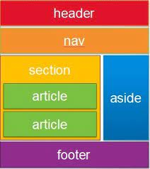

Entendiendo HTML: Etiquetas semánticas, CSS Grid
Inicio
Temas
Tema 1
Tema 2
Recursos Multimedia
Recurso 1
Recurso 2
Aprendizaje
Actividad 1
Actividad 2
Autor
Etiquetas semanticas
etiquetas html mp3
Ventajas HTML semantico
Ventajas html mp3
